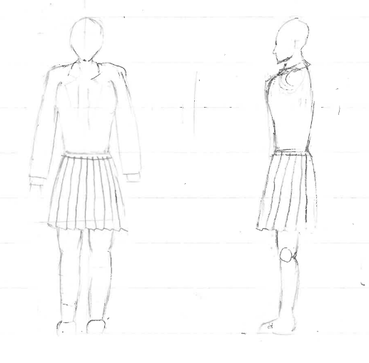
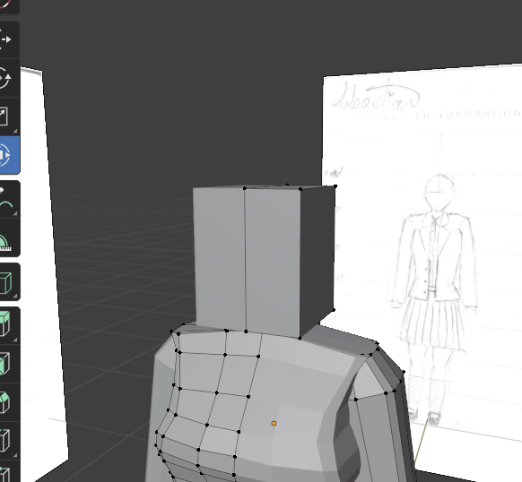
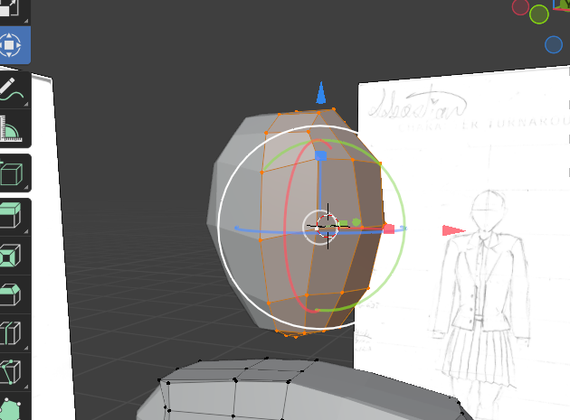
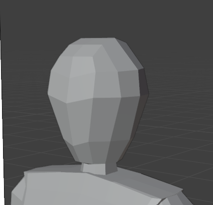
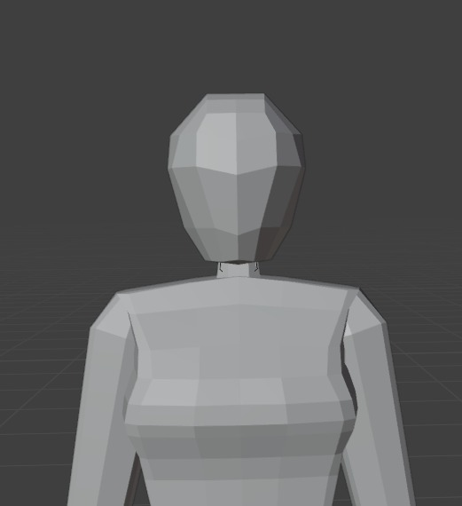
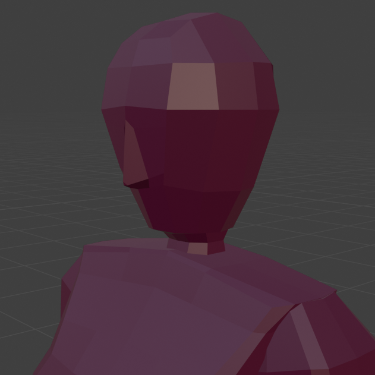

For this turnaround task, I drew the character sort of how one would model it. As in that I started with a more block like shape for each
main piece and whittled it down to what I felt was adequate. For example, I started with making the body just two trapezoids and the legs
as rectangles, then smoothed the lines and made it proportional. After that I added accesories and other details.

Testing
When I reviewed my design, I decided that the legs on the side profile needed to be made wider as they were too small and disproportionate.
I also decided that I needed to fix the knees of both the front and side profile since they were pretty ugly.
Feedback
I asked two friends who both do art regularly for feedback on my design, they both said that they felt that the blazer needed to be longer
(in the original drawing the printer didn't pick up the bottom of the blazer, it ended at the waist).
One friend said that the shoes needed to be resized on the side profile, and that the sleeves should be redrawn.
The other friend decided that the heads needed to be changed slightly, and gave advice on how to make the knees look more like knees.
Improvments
I took the advice my friends had given me and reworked many features of the design. The main one being the clothes of the character, which
in turn help show the figure of it (mainly in the arms/sleeves). Other than the clothes, the heads were changed slightly, the thighs were
made a bit smaller on the front profile and opposite for the side profile, and the legs in general were reshaped. The shoes were changed,
and hair was added simply to show where it would be.
While I do think this is much better, there are still some improvements that could be done. Most obvious are the shoes in the front profile,
as they are quite bad, and posture of the side profile(see right image for better posture). Along with the legs of the front profile, and
the side profile to a lesser extent, which should be wider than they are.
Task 2 - Head
Development
The modeling of this head took a deceptively long time, it taking a really long time to try and look okay. I had to completely restart a
couple times to get it as best as I could. At a certain point I realized that it wasn't worth it to continue trying to perfect it and just
let it rest. And after a while I think that I was simply too close to it, as in I was too focused on trying to make it perfect to realized
that it was already good.


Testing
As I mentioned before I went through a lot of testing to create the head I ended up with. I tried making custom knife cuts and dissolving
verticies, scaling things up and down trying to make it fit. But somehow the most simple solution of making 3 vertical and horizontal loop
cuts, shaping it to the side profile of the head, and then moving each round of verticies towards the midline where it mirrors. Afterwards
I tapered the bottom of the head to make it look more realistic, and went in and moved things around, scaled it up and down, and eventually
landed on this


Feedback
I asked a fellow classmate what they thought I could do to improve my head design and they responded by telling me that a nose might be
a good addition for my character, and I agree.
A friend of mine reccomended that I make the neck more dimensional, making it look a bit more like it is actually supproting the head, as
before it was just tapered at the bottom, which necks are not.
Improvments
I am very thankful that my colleague reccomended me to make a nose, as I really did want one but was simply too fearsome of it looking
terrible and/or being a complete waste of time. And while I usually don't mind trial and error, I was too tired to endure another round
of redoing the head.
The neck change, however subtle, I think did make a good difference. Looking back at the original neck, it looks more like a head of
broccoli than the head of a person.

Task 3 - Idle animation
Development
As I created the inital idle animation that the instructions introduced(see video below) I couldn't help but feel like there was something
I didn't like about it. I quickly realized that I just didn't feel like it was very unique, bobbing up and down doesn't really show any
personality either. So I decided to make a second one with a little bit more charcter.